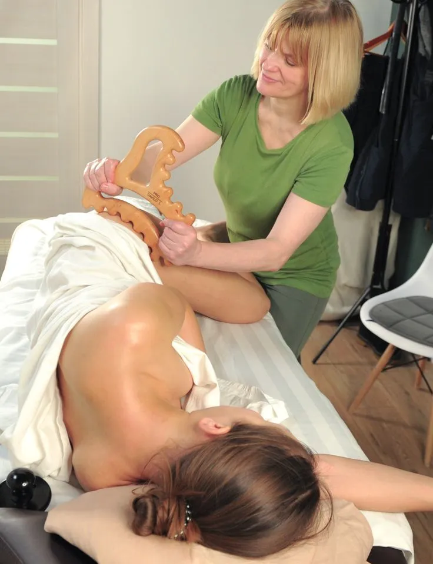

Оздоровительный и восстановительный массаж
Общий сеанс для отдыха и бережной работы с телом. Подход и интенсивность согласуем заранее.
БЕРЕЖНО · ИНДИВИДУАЛЬНО · ТОЛЬКО ДЛЯ ЖЕНЩИН
10 лет практики · член НАНМ
Девочек-подростков принимаю, если мама — моя постоянная клиентка.

Общий сеанс для отдыха и бережной работы с телом. Подход и интенсивность согласуем заранее.
Отдых и релакс. Темп и глубину воздействия подбираю по вашим ощущениям.
Деликатные направления. Вопросы восстановления после грудного вскармливания обсуждаем индивидуально.
Авторский массаж лица и БМС на аппарате Назарова: проработка лица, шеи, зоны декольте и апоневроза.
АРМ — артикуляционно-рефлекторный массаж по методике А. С. Иванова.